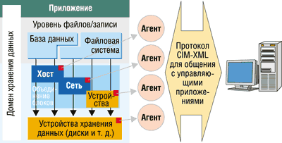

Елена Покатаева
Технологические основы информационного общества закладываются уже сегодня. Если пять лет назад крупные предприятия оснащали свои информационные системы большими дисковыми фермами объемом 500 Гбайт, то сегодня емкость в 500 Гбайт обеспечивается в устройствах высотой 1U, а на многих предприятиях функционируют хранилища данных объемом 20-50 Tбайт. Аналитики рынка утверждают, что многие предприятия столкнутся в течение ближайших лет с ежегодным ростом данных, генерируемых бизнес-приложениями, на 50-100%. А ведь удвоение емкости каждые девять месяцев означает ее 100-кратное увеличение за 5 лет.
Сегодняшний подход к проблемам сохранения информации - сугубо технократический. Приходится согласиться с тем, что нынешний уровень владения информацией, освоенный человечеством, ограничивается умением сохранять данные в течение периода времени, сравнимого со сроком жизни современных носителей информации. Понятно, что эта освоенная территория - лишь небольшая часть сложной системы гораздо более долговременного хранения информации, способной поддерживать адекватную эволюцию ее смысла на фоне эволюции форматов данных и самого языка.
"Бытовая" модель хранения данных
"Модель доставки ресурсов потребителям, над функционированием которой не приходится особо размышлять, существует давно, и мы встречаемся с ней каждый день, почти не обращая на нее внимания, именно потому, что пользование этими ресурсами не заставляет человека задумываться, - рассказывает Кирилл Вахрамеев, технический консультант отдела систем хранения данных компании НР. - Это предоставление всех коммунальных услуг: водоснабжения, газа, электричества. Никто не проходит курс специального обучения навыкам пользования водопроводным краном, несмотря на то, что городская система водоснабжения - это очень сложная техническая система. Все дело в том, что работа коммунальных служб организована по принципу предоставления конечной услуги пользователю, не имеющему ни малейшего представления о том, как она выполняется на техническом уровне".
Значит, получение нужных данных должно приобрести характер получения услуги, абсолютно прозрачной для пользователей и требующей минимального технического обслуживания. Иными словами, в рамках технически прозрачной инфраструктуры хранения данных пользователи должны быть озабочены функциональностью приложений, скоростью реакции приложений и, может быть, устойчивостью к сбоям в линиях подключения, а не числом дисков в массиве, коэффициентом эффективности кэш-памяти и средним временем между сбоями (MTBF).
В таких условиях ИТ-специалисты в большинстве своем наконец-то перестанут проходить специальное обучение для того, чтобы овладеть особыми инструментами работы с данными, и тратить время на раскладывание битов и байтов, а смогут направить свои интеллектуальные усилия на развитие способов обработки полученных данных и извлечения из них смысла. Собственно, потребительская ценность данных заключается вовсе не в их физической сущности, не в битах данных, размещенных на физическом носителе, а в содержании.
Для практического воплощения такой модели хранения данных нужна соответствующая техническая инфраструктура: во-первых, надежная, отказо- и катастрофоустойчивая; во-вторых, управляемая, причем ориентированная не на управление извне, а на самоуправление, т. е. адаптивная. И в-третьих, она должна быть расширяемой, масштабируемой по мере увеличения количества запросов пользователей и изменения структуры этих запросов, т. е. способной к развитию.
Ключевая идея инфраструктуры - поддержка эволюционного развития систем хранения на базе отказоустойчивых технических решений. Способность к самоуправлению - одна из важнейших характеристик этой инфраструктуры, которая позволяет минимизировать потери, связанные с воздействием "человеческого фактора" (рис. 1).
| Рис. 1. Основные причины потери данных и решения для их защиты.
|
Достичь бесперебойности функционирования на фоне постоянной саморегуляции и поддержки развития можно лишь в рамках единой согласованной концепции среды хранения данных. Компания Hewlett-Packard разработала такую концепцию и впервые представила ее под названием ENSAextended в январе 2002 г. В основу философии ENSAextended положены три базовых критерия.
Отказоустойчивость - среда хранения создается на базе инфраструктуры, элементы которой полностью продублированы, обеспечивающей автоматическую обработку отказов. Среда хранения обладает способностью контролировать собственное состояние и автоматически его регулировать.
Управляемость - ENSAextended обеспечивает предоставление услуг хранения данных на основе модульных сетевых систем хранения. Управляемые сервисы хранения предоставляются приложениям по мере необходимости, с соблюдением качества сервиса (QoS), а также с минимальными усилиями по администрированию систем. Принципы "поведения" систем хранения описываются в виде политик, тесно увязанных с бизнес-задачами предприятия.
Расширяемость - использование открытых модульных систем хранения данных и принципов масштабируемости по различным параметрам, включая емкость, производительность, доступность, распределенность в пространстве, глубину управления.
С течением времени отдельные положения концепции уточняются и развиваются, появляются новые продукты, поддерживающие функциональность архитектурных решений. Неизменной остается лишь основа концепции - многоуровневая модель данных, модульность и стандартизация, позволяющие реализовать унифицированные механизмы предоставления данных и взаимодействия между устройствами.
Многоуровневая модель данных
В концепции ENSAextended принята трехуровневая модель центра обработки данных, в соответствии с которой все информационные службы можно представить в виде симбиоза трех инфраструктур, или доменов.
Совместная работа доменов гарантирует уровни доступа и сервиса, которые необходимы для достижения текущих целей бизнеса, и обеспечивает функционирование центра обработки данных как единого источника предоставления информационных услуг. Элементы доменов, объединенные сетями связи, могут быть виртуализованы, а также снабжены различными управляющими приложениями.
Серверный домен включает серверы различных поставщиков, их операционные системы, приложения, а также средства объединения серверов и управления ими.
Сетевой домен включает активное сетевое оборудование (коммутаторы, мосты, маршрутизаторы и т. д.), а также управляющие приложения. Он отвечает за поддержку быстрого и бесперебойного информационного обмена между серверным доменом и доменом хранения.
Домен хранения охватывает системы и сети хранения данных, а также интеллектуальные средства управления всей инфраструктурой. Этот домен выполняет функции хранения и защиты данных. Он предоставляет информацию соответствующим приложениям в серверном домене.
Все современные технологии хранения данных: DAS, NAS, SAN, равно как и новые инфраструктурные решения, могут быть адекватно реализованы в рамках архитектуры ENSAextended (рис. 2).
| Рис. 2. Архитектура ENSAextended.
|
Компания НР (http://www.hp.com), поставляющая на рынок оборудование и ПО для систем хранения всех типов, предлагает подход, который на русский можно перевести как "слияние NAS и SAN" (NAS/SAN fusion). Суть его заключается в том, чтобы в условиях реальных задач предприятия объединить те лучшие средства, которые предоставляет каждая из технологий.
Так, NAS (Network Attached Storage), ориентированная на файловые сервисы, чаще всего используется для обслуживания офисных приложений (включая совместное использование файлов), управления контентом Web-серверов, консолидации "домашних" каталогов пользователей для управления и централизованного архивирования, обслуживания бездисковых серверных ферм, а также для обработки потоковой аудио- и видеоинформации. Системы NAS обычно работают на уровне файлов.
Системы SAN (Storage Area Network), ориентированные на обработку блоков данных, хранящихся в базах данных, обычно применяются для решения таких задач, как консолидация физических ресурсов памяти при запуске сложных приложений, совместное использование памяти в кластерных конфигурациях, совместное использование устройств долговременного хранения данных (библиотек), удаленного зеркалирования данных и/или репликации на уровне устройств хранения, а также для организации резервного высокоскоростного доступа к серверам крупных баз данных.
Объединение NAS и SAN позволяет добавить к NAS масштабируемость и управляемость, свойственные SAN. В свою очередь, SAN можно улучшить за счет механизмов файлового доступа и виртуализации, взятых у NAS. В целом получается единая оптимизированная среда хранения с менее сложным управлением.
Данная стратегия воплощена в продуктах семейства HP NAS, которые используют дисковые массивы HP StorageWorks в качестве общего репозитория данных, обеспечивая создание масштабируемой NAS-архитектуры. В результате появляется возможность экономии как персональных, так и системных ресурсов, а консолидированная среда SAN становится доступной большему числу приложений. Кроме того, решения StorageWorks NAS и SAN могут управляться из одной точки, что дополнительно снижает совокупную стоимость владения системами хранения данных.
Виртуализация - перспективный путь развития
Все предприятия, обладающие развитыми информационными системами, стремятся, с одной стороны, снизить стоимость систем хранения, требования к емкости которых постоянно растут. С другой стороны, они заинтересованы в том, чтобы улучшить управляемость систем хранения, в которых сосредотачивается все больше критически важных данных все более сложной структуры. Один из перспективных способов разрешения этих проблем, предложенных компанией Hewlett-Packard, заключается в применении технологий виртуализации систем хранения.
Виртуализация - это логическое администрирование физических активов, когда функционирование системы хранения описывается на уровне логических блоков: логический адрес блока данных не привязан к его физическому адресу. Фактически виртуализация - это способ разделения логического и физического уровня доступа к данным, с помощью которого, в частности, можно объединять физические устройства хранения в виртуальные пулы дисков. В каждом пуле, в свою очередь, можно выделять виртуальные диски, которые подключаются к серверам в качестве логических устройств (подобно номеру логического устройства - LUN - в протоколе SCSI).
В результате физическая структура хранилищ данных становится прозрачной для серверов и приложений, а процессы взаимодействия с физическими дисками и распределения емкости могут протекать вообще без их участия. Таким образом, виртуализацию систем хранения можно рассматривать как возможность преодоления физических ограничений систем хранения данных.
Виртуализация на уровне серверов - решение для небольших хранилищ данных начального уровня - может быть реализована при помощи серверного ПО, не зависящего от вида устройств хранения, например, HP OpenView Storage Virtual Replicator. В данном продукте технология виртуализации используется для создания пулов хранения в средах Microsoft Windows 2000/NT. Для небольших систем начального уровня особую актуальность имеет простота внедрения и эксплуатации решения, которая свойственна технологиям виртуализации.
Виртуализация на уровне сети хранения данных (SAN) - это решение для больших хранилищ, охватывающее всю сеть SAN и распространяющую на всю сеть возможности упростить администрирование и облегчить техническое сопровождение систем хранения. Это решение хорошо вписывается в идеологию открытых сетей хранения, которые могут использовать как виртуализованные, так и традиционные системы хранения. Пример - ПО HP OpenView Continuous Access Storage Appliance (CASA). Дальнейшее развитие технологии виртуализации на базе SAN идет в направлении ее реализации на уровне коммутаторов SAN. Эти работы НР ведет совместно с компанией Brocade (http://www.brocade.com).
Виртуализация на уровне систем хранения данных реализуется с помощью встроенного ПО контроллеров систем хранения, не требуя участия ни серверов, подключенных к сети SAN, ни специальных устройств в самой инфраструктуре сети. ПО контроллеров обеспечивает команды создания виртуальных дисков, создания мгновенных образов памяти (snapshot), физических копий виртуальных дисков (snapclone). Управление хранилищем данных и его мониторинг реализуется при помощи Web-браузера и ПО управления, которое может управлять всей сетью, базируясь на специальном сервере - HP OpenView Storage Management Appliance.
Виртуализация с использованием контроллеров системы хранения - это революционный шаг вперед по отношению к предыдущему событию такого уровня в истории развития систем хранения (им было появление RAID-массивов). Функционирование механизма виртуализации не снижает производительность систем хранения, в связи с чем данный тип виртуализации особенно подходит для высокопроизводительных систем высокой готовности и других задач, требующих эффективного управления хранилищем, репликации данных и поддержки кластеров. Пример - массив хранения HP StorageWorks Enterprise Virtual Array (EVA). Модель EVA 5000 показала наилучшие результаты в недавних тестах производительности SPC1 benchmark с результатом 24 тыс. операций ввода-вывода в секунду.
Специалисты НР считают, что при прочих равных условиях использование виртуализации на уровне систем хранения позволяет добиться увеличения производительности системы. Оно достигается в первую очередь за счет перераспределения путей доступа и ликвидации "перегретых" дисков (т. е. равномерного распределения операций ввода-вывода данных по всем дискам и балансировки нагрузки). Механизм виртуализации разносит данные по различным дискам, выбирая наиболее эффективный способ распределения. Виртуальный диск черпает необходимую емкость из пула хранения; в целях защиты данных избыточные блоки (зеркальные, блоки четности и т. п.) автоматически размещаются по физическим дискам таким образом, чтобы обеспечить сохранность данных в случае выхода из строя как отдельных физических дисков, так и модулей дискового массива (полок, контроллеров и т. п.).
Перераспределение данных может происходить автоматически в результате каких-либо событий. Поскольку производительность системы высока, эту особенность виртуализации можно использовать для регулирования нагрузки в реальном времени. Так, в массиве HP StorageWorks Enterprise Virtual Array процесс регулировки запускается каждый раз, когда обнаруживается возможность оптимизации текущего коэффициента загруженности. Этот процесс идет в фоновом режиме и практически не влияет на текущую производительность массива, поскольку операции ввода-вывода со стороны хостов выполняются с максимальным приоритетом.
Еще одна возможность виртуализации на уровне систем хранения - динамическое увеличение емкости виртуального диска в соответствии с потребностями приложения, реализуемое без прерывания работы самого приложения, поскольку резервную емкость можно точно также распределять и динамически перераспределять по физическим дискам. Кроме того, применение виртуального резервирования дискового пространства позволяет значительно ускорить операции восстановления данных в случае сбоев.
Контроллер дискового массива Enterprise Virtual Array сам периодически проверяет состояние поверхности дисков, а диски, в свою очередь, снабжены агентами проактивного мониторинга, которые сообщают контроллеру о подозрении на приближающийся сбой. Во всех ситуациях такого типа массив запускает фоновый процесс, который перераспределяет данные в доступном пространстве хранения. Механизм распределенного виртуального резервирования обратен алгоритму балансировки нагрузки; его цель - не выравнивание степени использования разных дисков, а перенос данных с дисков, находящихся под угрозой сбоя.
Технологии виртуализации позволяют также создавать мгновенные снимки логических устройств, не требуя заблаговременного выделения соответствующего дискового пространства (Virtually Capacity-Free Snapshot). Особенность Virtually Capacity-Free Snapshot заключается в том, что исходный виртуальный диск и его образ используют одно и то же пространство для хранения сходных сегментов блоков и за счет этого практически не расходуют дисковое пространство. Отметим, что массив Enterprise Virtual Array позволяет создавать образы Virtually Capacity-Free Snapshot для виртуальных дисков с любым уровнем избыточности (RAID 0, 1, 5).
Практически мгновенный доступ к реплицируемым данным можно получить благодаря технологии Virtually Instantaneous Snapclone - усовершенствованной разновидности технологии создания резервных физических копий дисковых томов (BCV). При этом скорость создания полной копии исходного виртуального диска фактически ограничивается лишь скоростью передачи данных.
В отличие от обычных контроллеров, которые не позволяют получить доступ к создаваемой копии данных до полного завершения процесса копирования исходного тома, Virtually Instantaneous Snapclone дает возможность приступить к работе с копией (BCV) практически сразу после ее создания.
Таким образом, технологии виртуализации обеспечивают функционирование различных механизмов саморегуляции систем хранения, включая поддержку максимальной производительности, оптимизацию использования ресурсов хранения и дискового пространства накопителей, эффективное управление системой. Фактически на основе технологий виртуализации создается гибкая и адаптивная среда хранения, которая освобождает системных администраторов от множества рутинных задач. Если учесть, что, согласно данным статистики, до 60% рабочего времени администраторов уходит на выполнение рутинных операций поддержки систем, получается, что инфраструктура хранения с применением виртуализации ориентирована на высвобождение ресурсов персонала. Иными словами, система хранения берет на себя часть работ, традиционно выполняемых системными администраторами. Кроме того, она помогает экономить пространство (снижается себестоимость 1 Мбайт) и время (сокращается время, уходящее на рутинные работы), уменьшая общую стоимость владения системой хранения (за счет расходов на управление).
Важное следствие создания адаптивной среды хранения - практическая возможность организовать массовое предоставление услуг хранения (Storage Provider). При этом важно, что технологии виртуальной репликации и создания мгновенных образов памяти весьма экономичны. Экономия средств достигается за счет того, что лицензионные отчисления рассчитываются исходя из емкости, используемой в процессе репликации, а не из совокупных характеристик установленной системы хранения.
Новый дисковый массив EVA для среднего бизнесаНовый дисковый виртуальный массив уровня предприятия HP StorageWorks Enterprise Virtual Array 3000 переносит производительность систем верхнего уровня на средние предприятия. Это законченное решение Fibre Channel заменяет серию модульных массивов предыдущего поколения EMA, использовавших интерфейс FC/SCSI. Дополнительно проводится заводская интеграция серверов ProLiant с массивами хранения данных. EVA 3000 использует ту же технологию виртуализации VersaStor, что и в EVA 5000, но масштабированную для средних предприятий. VersaStor поддерживает виртуальный RAID-массив, виртуальные мгновенные копии и виртуальное клонирование. Характеристики EVA 3000:
|
Отказоустойчивость среды хранения данных
Работоспособность любого механизма виртуализации зависит от надежности создаваемой инфраструктуры хранения. Впрочем, задача создания среды хранения, устойчивой к отказам всех типов, вряд ли поддается полному решению в общем виде. Компания НР решает задачу достижения высокой надежности за счет функций отказоустойчивости, а также самодиагностики и самовосстановления. В итоге должен быть реализован целостный подход к обеспечению отказоустойчивости систем хранения на основе самодиагностики и упреждающего перехода на резервные компоненты на всех уровнях модели данных.
Сегодня НР предлагает широкий спектр технологий защиты данных, основанных на дисковых и ленточных решениях (рис. 3). Информация о состоянии контроллеров устройств на уровне компонентов обеспечивает восстановление на уровне устройств. В дальнейшем подсистема сбора данных о неисправных режимах работы устройств будет развиваться, а содержащиеся в ней сведения будут использоваться при выполнении обязательных регулярных процедур проактивного мониторинга состояния устройства. Затем базы знаний о неисправностях будут встраиваться в приложения управления на уровне инфраструктуры. Эти приложения смогут запускать процедуры восстановления систем хранения и сетевых соединений с целью поддержки непрерывного доступа и высокой производительности на инфраструктурном уровне.
| Рис. 3. Эволюция адаптивной инфраструктуры хранения данных.
|
В конечном счете задача создания отказоустойчивой инфраструктуры принимает вид совокупности мероприятий, обеспечивающих непрерывность бизнес-процессов. Помимо действий с техникой, список этих мероприятий может включать разработку бизнес-моделей, ориентированных на использование ИТ, планов обеспечения постоянной готовности бизнес-процессов для удовлетворения критически важных потребностей, в том числе поставщиков и сервис-провайдеров, а также способов защиты самой деятельности предприятия (например, работа сотрудников в критической ситуации). Согласно оценкам аналитиков, 61% внеплановых простоев не связано со сбоями оборудования. Однако, используя некоторые особенности инфраструктуры сети хранения, можно минимизировать потери в этих случаях. К числу таких инфраструктурных особенностей относятся следующие:
- бесперебойное функционирование в режиме 7x24;
- отсутствие плановых простоев;
- минимизация времени восстановления данных после сбоев;
- контроль соглашений об уровне обслуживания.
Рассмотрим подробнее решение, обеспечивающее непрерывную поддержку бизнес-процессов на уровне сети хранения данных (SAN).
Решение HP CASA
НР Continuous Access Storage Appliance (CASA) представляет собой заранее сконфигурированное и полностью резервированное устройство, снабженное ПО виртуализации.
CASA поддерживает следующие функции зеркалирования в сети Fibre Channel:
- синхронное зеркалирование;
- конфигурирование на уровне LUN;
- возможность приостановки/возобновления;
- прямая и обратная ресинхронизация;
- журналирование при сбое массива, на который происходит копирование;
- зеркалирование дисковых массивов, подключенных к одному устройству или между устройствами, соединенными в каскад (Cross Appliance Mirroring);
- двунаправленное зеркалирование;
- копирование n-way - "один к многим" (максимум 9);
- отсутствие единой точки отказа - при сбое узла устройства второй узел продолжит зеркалирование без прерывания операции.
Устройства CASA обладают и возможностями каскадирования. Они включают зеркалирование по FC между LUN разных устройств, которые могут располагаться в разных стойках, комнатах или зданиях; двунаправленное зеркалирование; полное восстановление после сбоя или полного уничтожения одного из устройств. Хосты имеют единый доступ ко всем LUN на стороне A или B. Кластер может распределять свои данные по нескольким устройствам CASA.
IP-зеркалирование использует резервированные соединения IP и узлы устройств и применяет перенаправление данных ввода-вывода между узлами при сбое одного соединения. Оно защищает от сбоев узлов, соединений и сайтов и комбинаций таких сбоев. CASA поддерживает следующие функции зеркалирования по IP:
- синхронный или асинхронный режим (асинхронный гарантирует сохранение порядка записи при доставке);
- конфигурирование на уровне LUN;
- возможность приостановки/возобновления;
- прямая и обратная ресинхронизация;
- зеркалирование "многие к одному" (на одно устройство можно копировать до трех систем);
- двухстороннее зеркалирование (локальные LUN можно зеркалировать на удаленный сайт, а LUN с удаленного - на локальный).
CASA также обеспечивает гибридные схемы, например, каскадирование устройств с IP-зеркалированием. Получаемые при этом два уровня зеркалирования обеспечивают более надежную защиту данных. Этот способ сочетает преимущества, скорость и быстрое восстановление, свойственные синхронному зеркалированию, с возможностью большего территориального разнесения и изоляцией, свойственной IP-зеркалированию.
Функции виртуальных мгновенных образов, реализованные в CASA, позволяют, в частности, использовать несколько образов для отката к разным контрольным временным точкам в ситуации восстановления после катастроф. С помощью сценариев можно создавать расписание снятия образов. Создаваемые копии поддерживают операции записи и чтения, что позволяет тестировать приложения в офлайновом режиме.
CASA поддерживает большое количество самых разнообразных хостов и систем хранения от разных производителей, позволяя также преодолевать несовместимость некоторых типов хостов и систем хранения.
Другие решения
Поддержка непрерывности бизнеса на уровне системы хранения достигается также с помощью решений удаленного зеркалирования томов средствами дисковых массивов - Continuous Access XP и Continuous Access EVA. Оно поддерживает конфигурирование на уровне логических устройств и обеспечивает защищенную поддержку удаленного копирования на основе синхронного и асинхронного копирования данных с метками времени. Это решение хорошо масштабируется с использованием высокопроизводительных дисковых массивов, обеспечивающих передачу данных на скорости до 450 Мбайт/с. Оно использует технологии виртуализации, в частности, мгновенное резервное копирование, а также поддерживает кластерные расширения.
Все решения, предназначенные для поддержки непрерывности бизнеса, используют функциональность бизнес-копий (BC, Business Copy). Бизнес-копии отражают структуру параллельных процессов, обеспечивающих работу конкретных приложений. Соответствующие программные средства, например, HP StorageWorks Business Copy EVA, реализуют механизмы локальной репликации данных, используя как технологии виртуальных мгновенных образов особо важных баз данных и виртуальных клонов, так и технологии извлечения и анализа данных (data mining).
Понятие отказоустойчивости тесно связано с поддержкой эффективных технологий резервного копирования. Современные ленточные библиотеки компании НР строятся также по модульному принципу и поддерживают технологии сетей хранения SAN.
Основные подходы к реализации отказоустойчивых систем хранения компания НР объединила в рамках единой согласованной концепции обеспечения катастрофоустойчивости географически распределенных объектов HP Storage Works Multi-site Disaster Tolerant Solution. Комплекс предлагаемых решений позволяет предприятиям планировать свои действия на случай возникновения аварийных ситуаций на нескольких объектах и обеспечивать бесперебойное функционирование высокопроизводительных вычислительных систем в случае возникновения нештатных ситуаций как в одном регионе, так и в нескольких областях. В числе прочего имеется решение для создания отдельного центра обработки данных в географической точке, максимально удаленной от районов возможных бедствий. Этот удаленный резервный центр будет поддерживать работу информационной системы в случае потери работоспособности всех основных центров обработки, а в штатных условиях его ресурсы можно использовать для модернизации существующей системы без ее остановки.
Современные подходы к резервному копированию
Ключевую тенденцию развития данного сегмента рынка можно описать следующим образом: потребности в увеличении емкости средств резервного копирования растут вместе с количеством продаваемых серверов и увеличением емкости накопителей.
Ленточные технологии остаются самым популярным и недорогим решением для операций резервного копирования и архивирования данных. По данным исследования (на базе данных 2002 г.), проведенного компанией Gartner, самой продаваемой технологией остается DDS. Аналитик компании Freeman Боб Абрахам предсказывает, что DDS-устройства, пик популярности которых пришелся на 2000 г., когда было продано 1,5 млн таких устройств, останутся лидерами рынка средств резервного копирования по крайней мере до 2004 г. И позже, вплоть до 2008 г., они по-прежнему будут занимать значительную долю рынка.
Компания HP уже поставляет накопители на магнитной ленте HP DAT 72, в которых используется технология хранения цифровых данных DDS 5-го поколения. Ленточные накопители и картриджи HP DAT 72 имеют емкость до 72 Гбайт и скорость передачи данных до 6 Мбайт/с при использовании двукратного сжатия.
В марте этого года HP совместно с рядом других компаний, занимающихся разработкой и производством форматов, устройств и носителей, организовала рабочую встречу, призванную свести друг с другом все заинтересованные стороны для обсуждения различных аспектов лицензирования формата DAT, взаимозаменяемости носителей и их сертификации, а также для выработки программы действий с учетом будущих потребностей заказчиков в системах резервного копирования на базе технологий DDS и DAT.
В рамках концепции создания адаптивной отказоустойчивой среды хранения данных ENSAextended компания НР постоянно развивает решения на базе ленточных библиотек и накопителей семейства Ultrium. Так, в семействе ленточных библиотек HP StorageWorks MSL6000, предназначенном для систем среднего класса, НР применила в составе одной библиотеки высокоскоростной интерфейс SCSI Ultra 3 и устройства HP StorageWorks Ultrium 460, заменяемые в горячем режиме.
Ленточная библиотека HP StorageWorks MSL6060 способна выполнять резервное копирование данных с расчетной скоростью до 900 Гбайт/ч, что обеспечивает функционирование высоконадежной системы хранения особо важных данных. Полностью укомплектованная и максимально расширенная система семейства HP StorageWorks MSL6000, занимающая одну стойку высотой 42U, поддерживает расчетную скорость резервного копирования и восстановления данных до 3,6 Тбайт/ч (до 96 Тбайт/ч при сжатии).
Ленточная библиотека HP StorageWorks ESL9595 может выполнять резервное копирование и восстановление данных с расчетной скоростью до 3,5 Тбайт/ч. Накопители в этой библиотеке можно заменять "на ходу", а емкость и масштабируемость всей системы увеличена соответственно до 119 Тбайт и 64 накопителей с 2278 картриджами. Библиотека HP StorageWorks ESL в полной комплектации способна обеспечить резервное копирование данных с расчетной скоростью до 14 Тбайт/ч (емкость до 950 Тбайт при использовании сжатия).
В условиях постоянного роста объемов и скорости резервного копирования особо возрастает значение такого фактора, как эффективность восстановления данных после сбоя. Специально для этих целей компания НР разработала ПО OpenView Storage Data Protector - решение корпоративного уровня, обеспечивающее оперативное и надежное восстановление данных после сбоев любых типов. Созданное на базе распределенной архитектуры и централизованного управления, это решение способно интегрировать средства восстановления на базе как ленточных накопителей, так и дисков (рис. 4).
 |
| Рис. 4. Варианты применения решения OpenView Storage Data Protector.
|
Данное решение обеспечивает мгновенное восстановление данных (zero-downtime), используя возможность выбора из нескольких образов на диске для восстановления до любой контрольной точки. Полностью автоматизированный процесс создания мгновенных снимков и ротации зеркал, а также наличие графического интерфейса позволяет администратору управлять всем жизненным циклом образов в процессе восстановления данных на дисках и лентах.
Группа НР Nearline Storage провела в этом году исследование производительности различных решений для восстановления данных после аварий, в ходе которого был установлен мировой рекорд производительности систем хранения данных. Была достигнута постоянная скорость резервного копирования базы данных Oracle9i на уровне 3,6 Тбайт/ч, что почти на 40% превосходит предыдущий рекорд, датированный октябрем 2002 г. Тогда с помощью средств компании Computer Associates было проведено копирование данных со скоростью 2,6 Тбайт/ч, причем с использованием вдвое большего количества ленточных приводов.
Тестирование проводилось в лабораторных условиях, имитирующих работу системы в сети SAN крупной компании из списка Global 2000. Использовалась программно-аппаратная платформа хранения следующей конфигурации:
- библиотеки HP StorageWorks ESL9595 с 16 ленточными приводами HP Ultrium 460;.
- ПО HP OpenView Data Protector, интегрированное с ПО Backup and Recovery Manager (RMAN) корпорации Oracle;
- дисковый массив HP StorageWorks xp1024;
- инфраструктура HP StorageWorks Fibre Channel, включая HBA, коммутаторы и маршрутизаторы;
- сервер HP Superdome под управлением HP-UX 11i.
В целом решение HP для организации эффективного резервного копирования корпоративных данных, поддерживающее все типы сред хранения (DAS, SAN), базируется на открытых стандартах и реализует принципы модульной расширяемости. В результате обеспечивается совместимость конфигураций прямого подключения через SCSI и Fibre Channel и подключений через сеть SAN. Поддерживаются RAID-массивы и инфраструктура других фирм, а также разнообразные программные платформы, включая HP-UX, Windows NT/2000, Tru64 Unix, Linux, NetWare, Solaris и AIX. Возможно масштабирование среды хранения от начального уровня до уровня центров обработки данных с резервным копированием на уровне нескольких терабайт информации. При этом достигается высокая плотность хранения - свыше 100 Тбайт/м2 (для моделей ESL 9322/9595). Производительность процедур резервного копирования такова, что удается вообще обойтись без выделенного сервера резервного копирования.
Управление в рамках архитектуры ENSAextended
Сложность реализуемых в рамках ENSAextended разнообразных механизмов поддержки хранения данных обусловливает первостепенное значение функций управления. Понятие управления, определяемое не как техническое решение, а как услуга (сервис), выступает как основополагающее в рамках данной концепции. При этом внутренняя структура системы управления прозрачна для пользователя, который оценивает ее с точки зрения потребительских характеристик приложений, влияющих на его бизнес.
В основу концепции управления ENSAextended положены два основополагающих принципа: активное интеллектуальное управление и управление данными в течение всего их жизненного цикла.
Активное интеллектуальное управление
Принцип Active Intelligent Management (AIM) реализуется при помощи технологий, предоставляющих пользователям ресурсы хранения на основе модели самообслуживания системы хранения. AIM - это дальнейшее развитие программных средств адаптивного управления, которые НР разрабатывает в течение многих лет. Важная задача, решаемая с помощью AIM, - сокращение времени, которое расходуется на собственно управление.
Адаптивный подход к управлению предусматривает управление данными с учетом специфики приложений, что позволяет оперативно выявлять изменения в требованиях к доступности данных, времени реакции системы, пропускной способности и т. д., и реагировать на них. С этой целью в решениях НР используются средства непрерывного мониторинга показателей доступности данных со стороны приложений и степени использования ресурсов систем хранения. Кроме того, НР реализовала средства автоматической реконфигурации элементов хранения.
Так, ПО HP OpenView Storage Provisioner способно объединять массивы в пулы хранения, добавлять массивы в пулы и предоставлять необходимую емкость серверам приложений. Оно управляет созданием логических устройств и назначением их физическим серверам, а также автоматически конфигурирует массивы (по уровню RAID, количеству дисков в каждом массиве и т. д.). Фактически ПО HP OpenView Storage Provisioner - это первый этап реализации стратегии НР в направлении создания технологии самоконфигурации в масштабе всей сети SAN. Задача Storage Provisioner - не заменить системного администратора, а освободить его от выполнения рутинных операций для концентрации усилий на критически важных операциях.
Специалисты компании IDC, которые недавно провели исследование компаний из списка Fortune 100, установили, что только за счет централизации управления системой хранения (например, размещения ресурсов хранения и серверов в одном помещении или при наличии логической схемы территориально распределенных ресурсов) системный администратор сможет качественно управлять в 7 раз большей емкостью хранения.
Управление данными в течение их жизненного цикла
Принцип Life Cycle Data Management (LCDM) подразумевает создание и модификацию данных, их распределение, резервное копирование и восстановление, отбор и архивацию и, наконец, окончательное удаление данных.
Главная идея LCDM - реализация управления, ориентированного на сами данные, а не на технологии их хранения. Поэтому основные объекты LCDM - это данные, отображаемые виртуализированными пулами хранения. Пулы хранения описываются как некоторые объекты хранения, снабженные атрибутами. Стратегии управления на базе объектов хранения и их атрибутов, создаваемые администраторами, хранятся в среде ENSAextended и доступны для автоматического выполнения.
Система объектов управления имеет иерархическую структуру, так как функционирование некоторых технологий, в частности, виртуализации, приводит к появлению пулов вторичных, третичных и т. д. систем хранения информации. Каждый пул имеет уникальные атрибуты (емкость, производительность, доступность, скорость восстановления, безопасность, географическое местонахождение, затраты и т. д.), соответствующие различным уровням услуг.
Помимо атрибутов, связанных непосредственно с механизмами хранения, описания стратегий включают правила, вводимые администраторами и касающиеся, например, критериев выбора системных конфигураций, мероприятий по защите и переносу данных при возникновении определенных условий, настройки отчетов.
В процессе развития своей концепции управления средой хранения НР придерживается открытых стандартов и моделей, основанных на отраслевых стандартах, в частности, модели среды хранения коллективного использования, разработанной Ассоциацией сетей хранения данных SNIA (Storage Networking Industry Association). В рамках этой модели любые управляющие приложения, поддерживающие интерфейс SMIS (Storage Management Interface Specification, рис. 5), могут распространять свои функциональные возможности на системы хранения данных и другие системы, снабженные агентами Bluefin.
|  |
| Рис. 5. Интерфейс SMIS позволяет стандартизировать управление устройствами.
|
Недавно SNIA приняла созданный компанией HP программный пакет поддержки функций управления в качестве тестового решения для проверки соответствия любого ПО спецификации SMIS. Этот стандартный тест будет применяться для проверки работоспособности программных агентов SMIS в рамках программы CIM-SAN-2, ориентированной на разработчиков систем и средств хранения данных.
Сегодня HP поставляет интерфейсы, соответствующие требованиям предварительной версии 1.0 SMIS, в комплекте с дисковыми массивами семейств HP StorageWorks XP и Virtual Array. После ожидаемой ратификации SMIS в этом году список совместимых платформ и ПО будет расширен. В долгосрочной перспективе компания HP планирует обеспечить совместимость со SMIS всего спектра аппаратных средств StorageWorks и программных систем OpenView.
***
В целом концепция ENSAextended предусматривает создание эффективной, легкоуправляемой и удобной для пользователей, логически полной и непротиворечивой экосистемы хранения данных. Живая, ориентированная на развитие экосистема способна интегрировать новые технологии по мере их появления. Принципы ее архитектурного построения не зависят от конкретных протоколов, технологий соединений и особенностей оборудования - все они интегрируются в единую среду с соблюдением общесистемных требований.
Происходит, как образно описывает это Кирилл Вахрамеев, "...постепенное размывание всех границ и традиционных концепций. Постепенно стираются грани между монолитными и модульными системами как на уровне физического конструктива, так и на уровне функциональности. Размывается строгое разделение ИТ-инфраструктуры на три уровня: уровень серверов, сетевой уровень, уровень хранения. Сама архитектура информационных систем будет утрачивать строгие границы разделения на уровень обработки и уровень хранения данных, превращаясь во все более однородную структуру с развитыми функциями самоорганизации, самосохранения, самоадаптации, саморазвития". И тогда информацию мы будем сравнивать не с водой, текущей из крана, а с воздухом, присутствия которого мы обычно не замечаем, но без которого не можем жить.